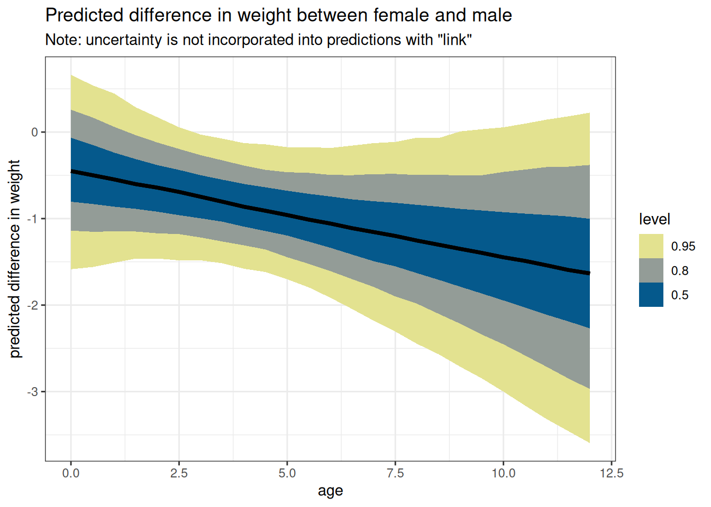

source('R/packages.R')Homework 02
Question 1
From the Howell1 dataset, consider only the people younger than 13 years old. Estimate the causal association between age and weight. Assume that age influences weight through two paths. First, age influences height, and height influences weight. Second, age directly influences weight through age-related changes in muscle growth and body proportions.
Draw the DAG that represents these causal relationships. And then write a generative simulation that takes age as an input and simulates height and weight, obeying the relationships in the DAG.
coords <- data.frame(
name = c('H', 'A', 'W'),
x = c(1, 1, 2),
y = c(0, 1, 0)
)dagify(
W ~ H + A,
H ~ A,
coords = coords
) |> ggdag(seed = 2) + theme_dag()# Recall: https://speakerdeck.com/rmcelreath/statistical-rethinking-2023-lecture-04?slide=22
# Set number of individuals
n_individuals <- 1e3
# Some numbers to guide the simulation
# 0 years: 50cm, 3.5kg
# 12 years: 150cm, 45kg
simulate_heights <- function(n) {
beta_age_height <- 7
beta_height_weight <- 3
beta_age_weight <- 2.5
age <- runif(n, 0, 12)
height <- rnorm(n, beta_age_height * age, 2)
weight <- rnorm(n,
(beta_height_weight * height) + (beta_age_weight * age),
2)
return(data.table(
age = age,
height = height,
weight = weight
))
}
DT <- simulate_heights(20)
ggplot(DT) +
geom_point(aes(age, weight))
Question 2
Use a linear regression to estimate the total causal effect of each year of growth on weight.
source('R/data_Howell1.R')
# height: Height in cm
# weight: Weight in kg
# age: Age in years
DT <- data_Howell()[age < 12]
# Simulate to determine appropriate priors
n <- 100
ggplot() +
geom_abline(aes(intercept = rnorm(n, 4, 0.5),
slope = rnorm(n, 4, 1)),
alpha = 0.1, size = 2) +
labs(x = 'age (cm)', y = 'weight (kg)') +
xlim(0, 12) +
ylim(0, 50)Warning: Using `size` aesthetic for lines was deprecated in ggplot2 3.4.0.
ℹ Please use `linewidth` instead.
# Model
m <- quap(
alist(
weight ~ dnorm(mu, sigma),
mu <- alpha + beta_age * age,
alpha ~ dnorm(4, 0.5),
beta_age ~ dnorm(4, 1),
sigma ~ dexp(1)
),
data = DT
)
precis(m) mean sd 5.5% 94.5%
alpha 6.360494 0.30634520 5.870895 6.850093
beta_age 1.479555 0.05681505 1.388753 1.570356
sigma 2.315527 0.15037864 2.075193 2.555861# Model (brms)
m_h02_q02 <- brm(
weight ~ 1 + age,
prior = c(
prior(normal(4, 0.5), Intercept),
prior(normal(4, 1), b),
prior(exponential(1), sigma)
),
data = DT,
refresh = 0
)tar_load(m_h02_q02)
posterior_summary(m_h02_q02) Estimate Est.Error Q2.5 Q97.5
b_Intercept 5.094576 0.70458518 3.522899 6.272208
b_age 1.320822 0.08965145 1.144587 1.499246
sigma 3.292029 0.45359263 2.589660 4.372071
lprior -113.199889 15.07420509 -139.373660 -80.497359
lp__ -453.892842 1.29496243 -457.129260 -452.422809Question 3
Now suppose the causal association between age and weight might be different for boys and girls. Use a single linear regression, with a categorical variable for sex, to estimate the total causal effect of age on weight separately for boys and girls. How do girls and boys differ? Provide one or more posterior contrasts as a summary.
coords <- data.frame(
name = c('H', 'A', 'W', 'S'),
x = c(1, 1, 2, 2),
y = c(0, 1, 0, 1)
)dagify(
W ~ H + A + S,
H ~ A + S,
coords = coords
) |> ggdag(seed = 2) + theme_dag()
# Group index for sex
DT[, sex := .GRP, by = male]
# Set up key of sex factor levels and labels
key <- unique(DT[, .(sex, sex_char = fifelse(male == 1, 'male', 'female'))])# Model
m <- quap(
alist(
weight ~ dnorm(mu, sigma),
mu <- alpha[sex] + beta_age[sex] * age,
alpha[sex] ~ dnorm(4, 0.5),
beta_age[sex] ~ dnorm(4, 1),
sigma ~ dexp(1)
),
data = DT
)
# Set up the options for predictions
DT_pred <- data.table(
age = seq(0, 12, 0.5)
)[, variable := paste0('V', .I)]
# Simulate where sex = 1, and where sex = 2
sim_sex_1 <- sim(m, DT_pred[, .(age, sex = 1)])
sim_sex_2 <- sim(m, DT_pred[, .(age, sex = 2)])
# Posterior of differences
sim_diff <- sim_sex_1 - sim_sex_2
# Melt and tidy
melt_diff <- melt(as.data.table(sim_diff))
DT_diff <- melt_diff[DT_pred, on = 'variable']
# Plot
ggplot(DT_diff, aes(age, value)) +
stat_lineribbon() +
scale_fill_scico_d(direction = -1,
palette = 'nuuk',
end = 0.9) +
labs(
y = 'predicted difference in weight',
title = paste('Posterior predicted difference in weight between',
key[sex == 1, sex_char], 'and',
key[sex == 2, sex_char])
)
# Note: differences with link
# Predict where sex = 1, and where sex = 2
link_sex_1 <- link(m, DT_pred[, .(age, sex = 1)])
link_sex_2 <- link(m, DT_pred[, .(age, sex = 2)])
# Posterior of differences
link_diff <- link_sex_1 - link_sex_2
# Melt and tidy
melt_diff <- melt(as.data.table(link_diff))
DT_diff_link <- melt_diff[DT_pred, on = 'variable']
# Plot
ggplot(DT_diff_link, aes(age, value)) +
stat_lineribbon() +
scale_fill_scico_d(direction = -1,
palette = 'nuuk',
end = 0.9) +
labs(
y = 'predicted difference in weight',
title = paste('Predicted difference in weight between',
key[sex == 1, sex_char], 'and',
key[sex == 2, sex_char]),
subtitle = 'Note: uncertainty is not incorporated into predictions with "link"'
)
# Model
tar_load(m_h02_q03)
# Set up the options for predictions
DT_pred <- CJ(
age = seq(0, 12, 0.5)
)
# Simulate where sex = 1, and where sex = 2
post_pred_sex_1 <- predicted_draws(m_h02_q03, DT_pred[, .(age, sex = 1)])
post_pred_sex_2 <- predicted_draws(m_h02_q03, DT_pred[, .(age, sex = 2)])
# Predicted table
DT_diff <- data.table(
predict_sex_1 = post_pred_sex_1$.prediction,
predict_sex_2 = post_pred_sex_2$.prediction,
age = post_pred_sex_1$age
)
# Posterior of differences
DT_diff[, diff := predict_sex_1 - predict_sex_2]
# Plot
ggplot(DT_diff, aes(age, diff)) +
stat_lineribbon() +
scale_fill_scico_d(direction = -1,
palette = 'nuuk',
end = 0.9) +
labs(
y = 'predicted difference in weight',
title = paste('Posterior predicted difference in weight between',
key[sex == 1, sex_char], 'and',
key[sex == 2, sex_char])
)
Details on the difference between sim and link are in the textbook around pages 105-110, the Overthinking box “How does link work?”, code 4.58-4.62, Rethinking box “two kinds of uncertainty”.
- link takes the model formula to return what the average line would predict about your new data
- sim takes the model formula and uncertainty to return the posterior distribution of lines would predict about your new data
Question 4 - optional challenge
The data in data(Oxboys) (rethinking package) are growth records for 26 boys measured over 9 periods. I want you to model their growth. Specifically, model the increments in growth from one period (Occasion in the data table) to the next. Each increment is simply the difference between height in one occasion and height in the previous occasion. Since none of these boys shrunk during the study, all of the growth increments are greater than zero. Estimate the posterior distribution of these increments. Constrain the distribution so it is always positive — it should not be possible for the model to think that boys can shrink from year to year. Finally compute the posterior distribution of the total growth over all 9 occasions.
# Get data and prepare it
data(Oxboys)
DT_ox <- data.table(Oxboys)
setorder(DT_ox, Occasion)
setnames(DT_ox, colnames(DT_ox), make_clean_names(colnames(DT_ox)))
DT_ox[, diff_height := height - shift(height), by = subject]
DT_ox[, index_occasion := occasion - 1]
# Simulate to evaluate priors
n <- 100
sim_prior <- CJ(occasion = unique(DT_ox$occasion),
row_id = seq.int(n))
sim_prior[, diff_height := rlnorm(.N, 0.1, 0.3)]
ggplot(sim_prior, aes(factor(occasion), diff_height)) +
stat_slab() +
labs(x = 'ocassion', y = 'difference in height (cm)')m <- quap(
alist(
diff_height ~ dlnorm(mu, sigma),
mu <- alpha[index_occasion],
alpha[index_occasion] ~ dnorm(0, 0.1),
sigma ~ dexp(1)
),
data = DT_ox[!is.na(diff_height)]
)
plot(precis(m, 2))sims <- sim(m, data.table(index_occasion = seq.int(8)))
# Posterior distribution of total growth
dens(apply(sims, 1, sum))